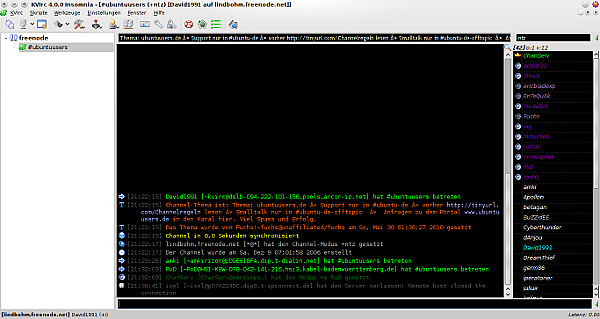
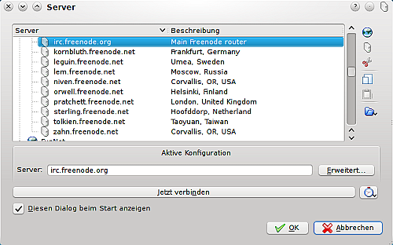
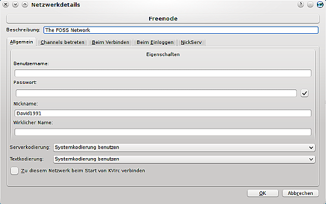

KVIrc
Dieser Artikel wurde für die folgenden Ubuntu-Versionen getestet:
Ubuntu 14.04 Trusty Tahr
Zum Verständnis dieses Artikels sind folgende Seiten hilfreich:
KVIrc  ist ein sehr umfangreicher, freier, grafischer IRC-Klient mit einer eigenen Skriptsprache, genannt KVS, und sehr vielen Konfigurationsmöglichkeiten. Da das Programm auf Qt basiert, eignet es sich besonders für die Desktopumgebung KDE, kann jedoch auch problemlos unter GNOME und allen anderen Desktopumgebungen benutzt werden.
ist ein sehr umfangreicher, freier, grafischer IRC-Klient mit einer eigenen Skriptsprache, genannt KVS, und sehr vielen Konfigurationsmöglichkeiten. Da das Programm auf Qt basiert, eignet es sich besonders für die Desktopumgebung KDE, kann jedoch auch problemlos unter GNOME und allen anderen Desktopumgebungen benutzt werden.
Installation¶
Aus den offiziellen Paketquellen¶
KVIrc kann über die offiziellen Ubuntu-Paketquellen über das Paket
kvirc (universe)
 mit apturl
mit apturl
Paketliste zum Kopieren:
sudo apt-get install kvirc
sudo aptitude install kvirc
installiert werden[1].
Aktuelle Version¶
Möchte man die aktuellste KVIrc-Version (und/oder die aktuelle Entwicklerversion) verwenden, empfiehlt es sich, KVIrc direkt von der Webseite zu besorgen.
Hinweis!
Fremdpakete können das System gefährden.
Die Pakete der aktuellen Version lädt man von der Downloadseite  herunter. Man benötigt ein Paket kvirc und ein Paket kvirc-data für die passende Architektur (i386, amd64).
herunter. Man benötigt ein Paket kvirc und ein Paket kvirc-data für die passende Architektur (i386, amd64).
Die Pakte kann man dann auf dem übliche Weg installieren[2].
KVIrc kompilieren¶
Möchte man die aktuelle Version von KVIrc selbst kompilieren, benötigt man zunächst die folgenden Pakete[1]:
build-essential
cmake
zlib1g-dev
qt4-qmake
libqt4-dev
libperl-dev
checkinstall (universe (optional))
mit apturl
Paketliste zum Kopieren:
sudo apt-get install build-essential cmake zlib1g-dev qt4-qmake libqt4-dev libperl-dev checkinstall
sudo aptitude install build-essential cmake zlib1g-dev qt4-qmake libqt4-dev libperl-dev checkinstall
Anschließend lädt man den Source-Tarball von der offiziellen Webseite herunter und entpackt[4] es. Anschließend kann man KVIrc zu kompilieren[3].
Benutzung¶
|  |
| Das Hauptfenster von KVIrc 4.0 - verbunden zu einem Server. |
Nach erfolgreicher Installation öffnet man das Programm entweder unter
"K-Menü -> Programme -> Internet -> KVirc (KDE)"
"Anwendungen -> Internet -> KVirc (GNOME)"
oder startet das Programm über den Aufruf von kvirc [5].
Erster Start¶
Wenn man das Programm gestartet hat, öffnet sich zuerst der Konfigurationsassistent. Nach Abschluss der Konfiguration öffnet sich das Hauptfenster und die Server-Liste. Dort sucht man sich einen Server aus und klickt auf "Jetzt verbinden".
Server-Liste¶
|  |
| Geöffnete Serverliste |
In diesem Fenster kann man ein Netzwerk auswählen und Server hinzufügen oder entfernen. Zusätzlich kann man über den Button "Erweitert" Einstellungen für automatisches Login bei Nickserv und automatisches Betreten von „IRC-Kanälen“ vornehmen. Außerdem kann man hier verschiedenste Einstellungen zum Verbinden (beispielsweise Benutzung von IPv6) auswählen - und beim Verbinden sowie beim Einloggen verschiedene Skripte benutzen (z.B. falls der Server, zu dem man eine Verbindung aufbaut, ein anderes Anmeldesystem benutzt als NickServ).
|  |
| Erweiterte Einstellungen |
Einstellungen¶
Unter "Einstellungen -> KVIrc konfigurieren.." finden sich verschiedenste Möglichkeiten, um KVIrc zu konfigurieren. Unter anderem kann man hier die eigene Identität bearbeiten, die Serverliste bearbeiten, über einen Proxyserver eine Verbindung herstellen und vieles mehr.
Identität¶
Unter diesem Punkt kann man Nicknamen, Avatar, Persönliche Angaben, verschiedene Netzwerkprofile und eine Kanal-Verlassen-, sowie Beenden-Nachricht einstellen.
Verbindung¶
In diesem Bereich kann man sämtliche verschiedenen Verbindungseinstellungen, die das Programm zu bieten hat, konfigurieren. Unter anderem kann man hier einen Proxyserver, Secure_Sockets_Layer SSL, sowie einen Ident-Service einrichten.
IRC¶
Unter diesem Knotenpunkt sind sämtliche wichtigen Einstellungen für das IRC und auch diverse Protections (z. B. Schutz vor Flood:). Hier kann man außerdem den KVIrc-internen Spamfilter aktivieren und die Filterdatei editieren, um einen angepassten Schutz vor Spam zu bekommen.
DCC¶
Hier kann man Einstellungen für Dateiübertragungen und (abhörsichere, schnellere) Chats für DCC vornehmen. Unter anderem lässt sich hier der Speicherort nachträglich verändern, in dem Dateien, die man über DCC empfangen hat, gespeichert werden.
Interface¶
In diesem Bereich werden allgemeine Einstellungen zum Interface vorgenommen. Beispielsweise kann man hier die Nickvervollständigung einstellen, sowie festlegen, ob ein Tray-Icon verwendet wird, oder nicht.
General Options¶
Hier versteckt sich unter anderem der wichtige URL-Handler, den man benötigt, wenn im IRC jemand einen Link zu einer Webseite hineinsetzt und man diese aufrufen möchte. Außerdem werden können hier bestimmte Optionen für Dateitypen verändert werden (z. B. dass für ein bestimmtes Audiodatenformat ein bestimmter Mediaplayer automatisch geöffnet wird).
Im Bereich "Language" kann man Einstellungen zur Zeichenkodierung vornehmen. Damit diese Änderungen wirksam werden, muss KVIrc jedoch neu gestartet werden.
Unter "Sounds" kann man einstellen, ob und welche Ereignisse mit einem selbst ausgewählten Klang verbunden werden. Tritt das bestimmte Ereignis in Kraft (z. B. man wurde aus einem Kanal rausgeschmissen), wird nun dieser bestimmte Klang abgespielt.
Unter "Scripting Engine" kann man noch einige Einstellungen zu Fehlermeldungen etc. für die KVIrc-eigene Skript-Sprache KVS.
Erweiterungen¶
Erweiterungen finden sich auf der offiziellen KVIrc-Webseite .
Hinweis:
Derzeit werden auf der Seite leider keine Skripte angeboten, was sich jedoch innerhalb der nächsten Wochen und Monate ändern wird.
- Erstellt mit Inyoka
-
 2004 – 2017 ubuntuusers.de • Einige Rechte vorbehalten
2004 – 2017 ubuntuusers.de • Einige Rechte vorbehalten
Lizenz • Kontakt • Datenschutz • Impressum • Serverstatus -
Serverhousing gespendet von